|
.: Fixing a sticky front door handle:. |
|
It seems that more and more of use are suffering the problem of front door handle button sticking inside the handle.
Thanks to Black Beauty pics, time and efforts this guide has been created to
help you lot remove the handle so that you can clean it up and replace it.
Note: This guide was created with a 2.0 T-Spark 156, the process may differ in other models
The problem:The front door handle button sticks in.
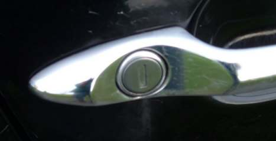
Prep:Tools and parts
Tools required...
"flat" screw driver
"philips" screwdriver
4mm & 5mm allen keys
M27 Torx driver
A sharp blade to remove the sound proofing
Silicon Spray
1: Remove the small door handle screw cover and the window button unit.
To remove the electric window controller, lift the rubber cover at the bottom with a "flat" headed screwdriver,
then loosen & remove the 2 4mm Allen headed bolts.
Then "pop" the control panel up with the same screw driver.
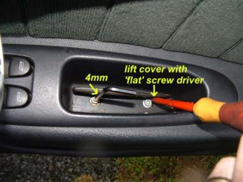
2: The screw cover removed and the window button unit removed.
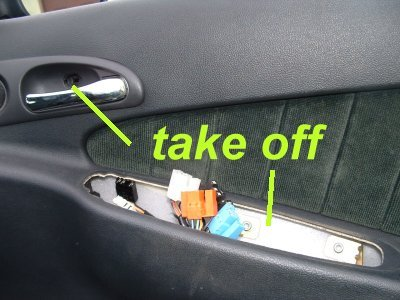
3: Panel 2 - inside door cavity from removing the window buttons.
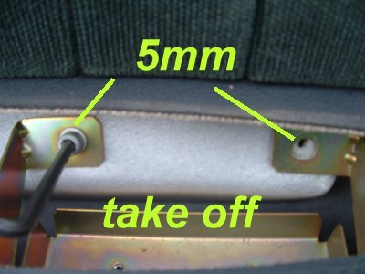
4: Panel 3 - Remove speaker grill (pop off) and remove speaker.
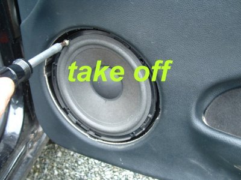
5: Panel 4 - Remove mirror cover (pop off), remove tweater & handle cover.
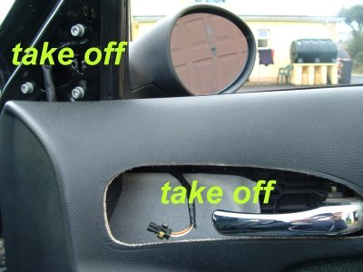
6:Panel 5 - Remove this thing.
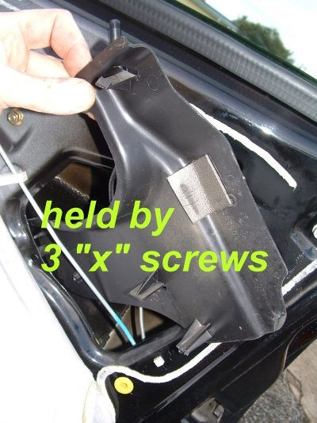
7: Door handle is held at 2 locations, Open this Torx screw 1st before opening the inside 10mm nut of the door handle
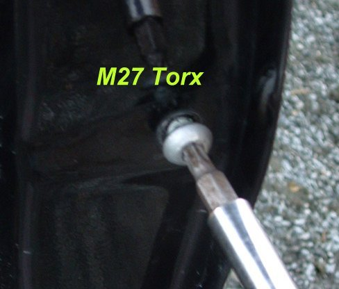
8:To remove the panel, use a the "flat" head screw driver to GENTLY prise the panel off the door frame.
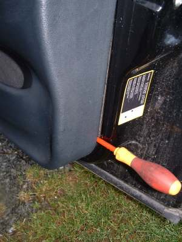
9: This is the door stripped as much as I found necessary, you might need knife to remove some of the sound proofing.
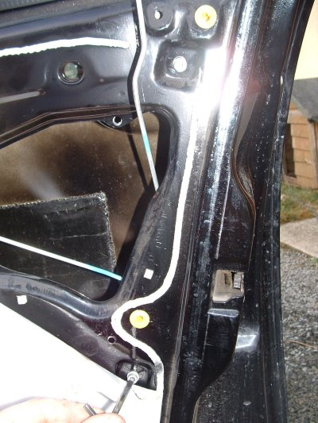
10: Next up was the challenge of removing the linkages, one "pops" off easily, the one in the pic was more difficult.
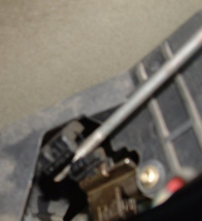
11:
Then the window slider had to be removed, held by two 5mm allen bolts
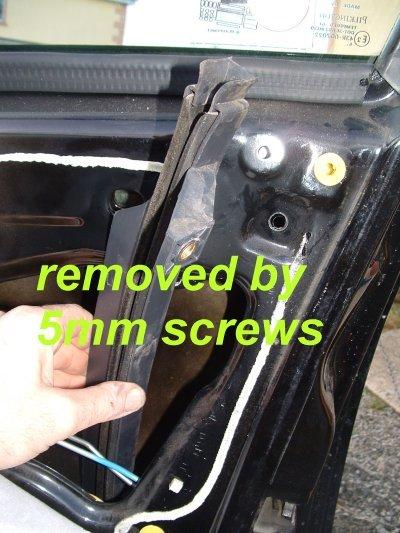
12: Next challenge, believe its not easy,
removing the handle ---> the top of the "OPEN" linkage has to be prised off before the handle can be removed.
I found it best to have the handle at 90 deg's & then get a flat screw driver to prise it gently out
...... no pic.... not enough hands
When the linkage is off, then PRESS IN & HOLD IN the button & rotate the handle until it feds out thro the hole
..... trial and error ---> you'll get it eventually.....
mind the paint!
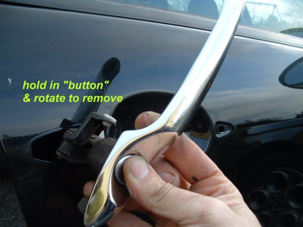
13: I took the opportinuity to polish under the handle...sad or what.
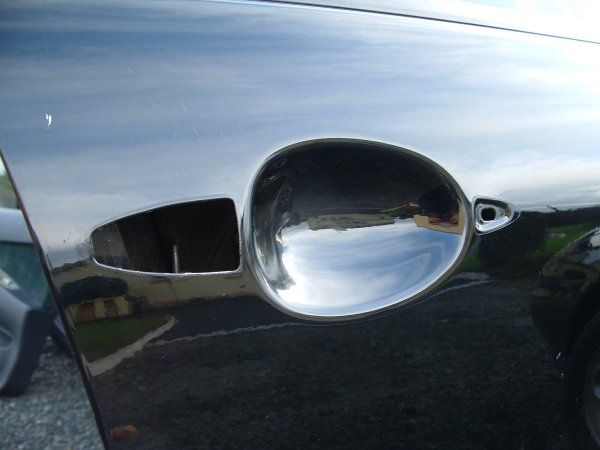
14: When the handle is cleaned up, then reverse the procedure and put it all back together
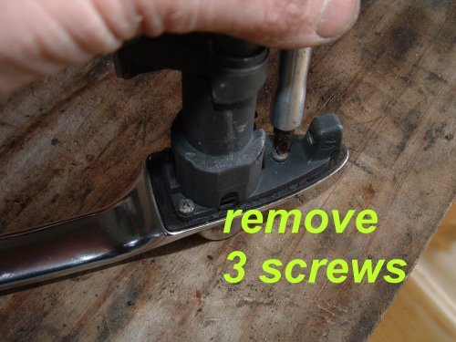
15: Go for a beer!!
I hope this helps some of you out.
- alfa156.net - jeff_porter & Black Beauty (Pat).
|
.: Fixing a sticky front door handle:. |
|